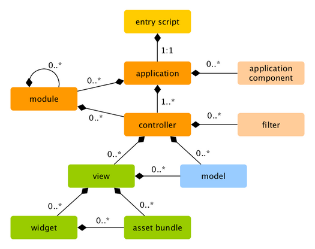

Yii
Table of Contents
1 Yii
| Basic | 简单网站，没有子系统、前后台 |
|---|---|
| Advanced | 中型网站，两套界面：前台、CMS |
组成
| MVC | |
|---|---|
| Entry script | PHP scripts that are directly accessible by end users |
| Responsible for starting a request handling cycle | |
| Application | Globally accessible objects |
| Manage application components, and coordinate them to fulfill requests | |
| Application component | Objects registered with applications |
| Provide various services for fulfilling requests | |
| Module | Self-contained packages that contain complete MVC by themselves |
| An application can be organized in terms of multiple modules | |
| Filter | Code to be invoked before / after the actual handling of each request by controllers |
| Widget | Objects that can be embedded in views |
| May contain controller logic and can be reused in different views |

请求流程
- web server 接受请求，传递到
index.php； - 创建
Application对象，决定处理请求需要使用的Controller类； Controller对象创建，决定需要执行的Action并执行，传递请求细节数据；- 动作执行，返回渲染结果；
- 一个特殊组件（component）将数据格式化；
- 结果数据：HTML、JSON、XML 返回给用户；
2 Dir
Project root
backend/ |
Advanced 后台 |
|---|---|
common/ |
前后台共用代码 |
console/ |
自定义 console 命令 |
frontend/ |
Advanced 前台 |
vendor/ |
Composer 安装的包 |
requirements.php |
检查部署环境是否满足 Yii 要求 |
@app/
- Application root;
- For Basic app, it's project root;
- For Advanced app, it's
backend/orfrontend/under project root;
config/ |
配置文件 |
|---|---|
controllers/ |
|
models/ |
|
views/ |
|
web/ |
应用公开目录 |
2.1 项目文件
controllers/<Menu>Controller.php |
|
|---|---|
models/<model>/<Model>.php |
|
models/<model>/<Model>Record.php |
|
views/<menu>/<action>.php |
3 Config
config/
console.php |
|
|---|---|
db.php |
|
web.php |
config/web.php
id |
应用名 | |
|---|---|---|
basePath |
应用绝对路径，所有相对路径都基于此 | |
components.request.cookieValidationKey |
用于基于 Cookie 的身份验证 | |
components.request.enableCookieValidation |
设为 false 关闭基于 Cookie 的认证 |
|
components.urlManager.enablePrettyUrl |
boolean |
优化 URL 模式 |
components.urlManager.showScriptName |
boolean |
URL 是否显示 index.php |
class |
|
|---|---|
dsn |
|
username |
|
password |
3.1 常量
YII_DEBUG |
Debug 模式开关 |
|---|---|
3.2 Web server 配置
Apache
# Set document root to be "basic/web"
DocumentRoot "path/to/basic/web"
<Directory "path/to/basic/web">
# use mod_rewrite for pretty URL support
RewriteEngine on
# If a directory or a file exists, use the request directly
RewriteCond %{REQUEST_FILENAME} !-f
RewriteCond %{REQUEST_FILENAME} !-d
# Otherwise forward the request to index.php
RewriteRule . index.php
# ...other settings...
</Directory>
Nginx
server {
charset utf-8;
client_max_body_size 128M;
listen 80; ## listen for ipv4
#listen [::]:80 default_server ipv6only=on; ## listen for ipv6
server_name mysite.local;
root /path/to/basic/web;
index index.php;
access_log /path/to/basic/log/access.log;
error_log /path/to/basic/log/error.log;
location / {
# Redirect everything that isn't a real file to index.php
try_files $uri $uri/ /index.php?$args;
}
# uncomment to avoid processing of calls to non-existing static files by Yii
#location ~ \.(js|css|png|jpg|gif|swf|ico|pdf|mov|fla|zip|rar)$ {
# try_files $uri =404;
#}
#error_page 404 /404.html;
location ~ \.php$ {
include fastcgi_params;
fastcgi_param SCRIPT_FILENAME $document_root/$fastcgi_script_name;
fastcgi_pass 127.0.0.1:9000;
#fastcgi_pass unix:/var/run/php5-fpm.sock;
try_files $uri =404;
}
location ~ /\.(ht|svn|git) {
deny all;
}
}
4 Controller
4.1 路由
| 默认 URL | http://yourdomain/index.php?r=menu/action |
|---|---|
| 优化 URL | http://yourdomain/menu/action |
config/web.php
$config = [ 'components' => [ 'urlManager' => [ 'class' => 'yii\web\UrlManager', 'enablePrettyUrl' => true, 'showScriptName' => false, 'rules' => [ '<controller:\w+>/<id:\d+>' => '<controller>/view', '<controller:\w+>/<action:\w+>/<id:\d+>' => '<controller>/<action>', '<controller:\w+>/<action:\w+>' => '<controller>/<action>', ], ], ], ];
4.2 示例
controllers/<Menu>Controller.php
namespace app\controllers; // 属于 Application 类的 controllerNamespace 定义的命名空间 use yii\web\Controller; // 继承 \yii\web\Controller 或 \yii\base\Controller（用于 console） class MenuController extends Controller // 类名以 Controller 为后缀 { public $layout = 'menu'; // 列表动作 public function actionIndex() // 方法名以 action 为前缀 { $records = $this->findRecords(); return $this->render('index', compact('records')); } // 添加动作 public function actionAdd() { $model = new ModelRecord(); if ($this->load($model, $_POST)) // Yii 假设渲染表单的路径，也是表单提交的动作 { $this->store($this->makeModel($model)); return $this->redirect('/menu'); } return $this->render('add', compact('model')); } // 查询动作 public function actionQuery() { return $this->render('query'); } private function findRecords() { $property = Yii::$app->request->get('property'); $records = $this->getRecordsByProperty($property); $dataProvider = $this->wrapIntoDataProvider($records); return $dataProvider; } private function getRecordsByProperty($property) { $record = ModelRecord::findOne(['property' => $property]); if (!$record) return []; return [$this->makeModel($record)]; } private function wrapIntoDataProvider($data) { return new ArrayDataProvider([ 'allModels' => $data, 'pagination' => false ]); } private function load(ModelRecord $model, array $post) { return $model->load($post) // 从 POST 请求数据中读取 Model 属性 and $model->validate(); // 数据验证 } // 将数据库记录生成 Model private function makeModel(ModelRecord $record) { $property = $record->property; $model = new Model($property); return $model; } // 将 Model 数据存储到数据库 private function store(Model $model) { $record = new ModelRecord(); $record->property = $model->property; ... $record->save(); // save() 之后生成了 $record->id } }
5 Model
- Model 被用作数据的容器，而不直接与数据库相关；
5.1 示例
models/<model>/<Model>.php
namespace app\models\model; // 将相关类组织在一个命名空间 // 对应目录 models/model/ Class Model { // Properties ... public function __construct() { } }
5.2 API
load() |
|
|---|---|
validate() |
$errors |
存储 validate() 产生的错误信息 |
6 AR
- ActiveRecord；
- 对象关系映射（ORM），定义类与数据表之间的映射关系；
- 存储到数据库之前对字段进行验证；
- 通过主键、属性、自定义查询，从数据库获取记录数据；
6.1 示例
models/<model>/<Model>Record.php
namespace yii\models\model; use yii\db\ActiveRecord; class ModelRecord extends ActiveRecord { public static function tableName() { return '<table>'; } public function rules() { return [ ['<column>', '<rule>', ...], ... ]; } }
6.2 API
rules() |
|
|---|---|
save() |
|
findOne() |
验证规则
| 类型 | number |
|
|---|---|---|
string |
||
date |
||
| 存在 | required |
|
safe |
||
| 长度 | max |
256 |
| 格式 | format |
Y-m-d |
safe表示无特定规则，可被setAttributes()设置；
7 View
- Controller 执行
render()，将数据传递给 View； - Controller 调用 Layout，将渲染结果通过
$content传递给 Layout；
变量
$this |
View component yii\web\View |
|---|---|
| 预定义变量 | 由 Controller 传递给 View 的数据 |
| 通常用块注释在 View 的头部列出 |
7.1 Layout
- Views that represent the common parts of multiple views, eg. header, footer;
- Stored in
@app/views/layoutsby default, can be customized by configuringyii\base\Module::$layoutPath;
Trigger methods
| Example data | Event | |
|---|---|---|
beginPage() |
EVENT_BEGIN_PAGE |
|
head() |
Link tags, meta tags | |
beginBody() |
JS targeted at <body> begin position |
EVENT_BEGIN_BODY |
endBody() |
JS targeted at <body> end position |
EVENT_END_BODY |
endPage() |
EVENT_END_PAGE |
Example
<?php use yii\helpers\Html; /* @var $this yii\web\View */ /* @var $content string */ ?> <?php $this->beginPage() ?> <!DOCTYPE html> <html lang="en"> <head> <meta charset="UTF-8"/> <?= Html::csrfMetaTags() ?> <title><?= Html::encode($this->title) ?></title> <?php $this->head() ?> </head> <body> <?php $this->beginBody() ?> <header>My Company</header> <?= $content ?> /* Rendering result of content views */ /* Pushed into the layout when yii\base\Controller::render() is called */ <footer>© 2014 by My Company</footer> <?php $this->endBody() ?> </body> </html> <?php $this->endPage() ?>
7.2 Block
- Specify view content in one place, display it in another place;
In View
<?php $this->beginBlock('block'); ?> ... content ... <?php $this->endBlock(); ?>
In Layout
<?php if (isset($this->blocks['block'])): ?> <?= $this->blocks['block'] ?> <?php else: ?> ... default content ... <?php endif; ?>
7.3 示例
7.3.1 列表
列表页面 views/<menu>/index.php
echo \yii\widgets\ListView::widget([ 'options' => [ 'class' => 'list-view', 'id' => 'search_results' // 显示列表的 HTML 标签的 id ], 'itemView' => '_model', 'dataProvider' => $records ]);
列表项 views/<menu>/_<model>.php
echo \yii\widgets\DetailView::widget([ 'model' => $model, 'attributes' => [ ['attribute' => '<property>'], ['attribute' => '<property>', 'value' => $model->property], '<property>:text', ['label' => '<Property'>, 'attribute' => 'property.0.number'] ] ]);
7.3.2 表单
views/<menu>/add.php
use app\models\model\ModelRecord; use yii\web\View; use yii\helpers\Html; use yii\widgets\ActiveForm; $form = ActiveForm::begin([ 'id' => 'form', ]); echo $form->errorSummary([$model]); // 验证错误信息 // Model 对象由 render() 方法传入 echo $form->field($model, '<field>'); echo Html::submitButton('Submit', ['class' => 'btn btn-primary']); ActiveForm::end();
<?php use yii\helpers\Html; use yii\widgets\ActiveForm; /* @var $this yii\web\View */ /* @var $form yii\widgets\ActiveForm */ /* @var $model app\models\LoginForm */ $this->title = 'Login'; ?> <h1><?= Html::encode($this->title) ?></h1> <p>Please fill out the following fields to login:</p> <?php $form = ActiveForm::begin(); ?> <?= $form->field($model, 'username') ?> <?= $form->field($model, 'password')->passwordInput() ?> <?= Html::submitButton('Login') ?> <?php ActiveForm::end(); ?>
7.3.3 查询
viewe/<menu>/query.php
use yii\helpers\Html; echo Html::beginForm(['/menu'], 'get'); echo Html::label('Property to search:', 'property'); echo Html::textInput('property'); echo Html::submitButton('Search'); echo Html::endForm();
7.4 yii\base\View
beginContent() |
Begins rendering of content decorated by specified view |
|---|---|
7.4.1 beginContent()
beginContent ( $viewFile, $params = [] )
$viewFile |
String | The view file to decorate the content enclosed |
|---|---|---|
| Can be view file path or path alias | ||
$params |
Array | Variables to be extracted and made available in decorative view |
| Return | yii\widgets\ContentDecorator |
Implement nested layout
<?php $this->beginContent('@app/views/layouts/base.php'); ?> ... layout content ... <?php $this->endContent(); ?>
7.5 yii\helpers\BaseHtml
View 中调用
<?= Html::<method>() ?>
$options 属性值通用规则
- 值为 Null 时，属性不会输出；
- 值为 Boolean 时，属性只输出名称，eg.
checkeddisabled； - 自动通过
Html::encode()编码； - 值为数组时：
- 属性名属于
yii\helpers\Html::$dataAttributes时，会生成多个数据属性：['data' => ['id' => 1, 'name' => 'yii']]生成data-id="1" data-name="yii"；['data' => ['params' => ['id' => 1, 'name' => 'yii'], 'status' => 'ok']]生成data-params='{"id":1,"name":"yii"}' data-status="ok"；
- 属性为
class时，属性值用空格分隔：['class' => ['btn', 'btn-default']]生成class="btn btn-default"；
- 其他属性名，属性值输出成 JSON 格式：
['params' => ['id' => 1, 'name' => 'yii']生成params='{"id":1,"name":"yii"}'；
- 属性名属于
内容
encode() |
特殊字符编码为 HTML entity |
decode() |
HTML entity 解码成字符 |
标签
tag() |
完整标签 |
|---|---|
beginTag() |
起始标签 |
endTag() |
结束标签 |
Form
beginForm() |
|
|---|---|
endForm() |
|
input() |
|
button() |
|
submitButton() |
|
resetButton() |
CSS
addCssClass() |
|
|---|---|
removeCssClass() |
|
addCssStyle() |
|
removeCssStyle() |
|
cssStyleFromArray() |
|
cssStyleToArray() |
7.5.1 addCssClass() removeCssClass()
void addCssClass ( &$options , $class )
void removeCssClass ( &$options , $class )
$options |
Array |
|---|---|
$class |
String / Array |
示例
$options = ['class' => 'btn btn-default']; if ($type === 'success') { Html::removeCssClass($options, 'btn-default'); Html::addCssClass($options, ['btn-success', 'btn-submit']); } // <div class="btn btn-success btn-submit">content</div> echo Html::tag('div', 'content', $options);
7.5.2 addCssStyle() removeCssStyle()
void addCssStyle ( &$options , $style , $overwrite = true )
void removeCssStyle ( &$options , $properties )
示例
$options = ['style' => ['width' => '100px', 'height' => '100px']]; // new style="width: 100px; height: 200px; position: absolute;" Html::addCssStyle($options, 'height: 200px; position: absolute;'); // new style="position: absolute;" Html::removeCssStyle($options, ['width', 'height']);
7.5.3 beginForm() endForm()
7.5.5 button() submitButton() resetButton()
7.5.6 cssStyleFromArray() cssStyleToArray()
7.5.7 encode() decode()
7.5.8 input()
8 Widget
- 渲染数据的辅助类，进行排序、分页、过滤等操作；
| DetailView | |
|---|---|
| ListView | |
| GridView |
9 Database
config/db.php |
配置文件 |
10 API
\yii\
Yii |
Bootstrap 类 |
\yii\web\
| 继承 | |
|---|---|
Application |
\yii\base\Application |
Request |
\yii\base\Request |
10.1 \yii\web\Request
get() |
获取 GET 参数 |
|---|---|
10.1.1 get()
mixed get ( $name = null, $defaultValue = null )
$name |
String | |
|---|---|---|
| Null | 返回全部 GET 参数（数组） | |
11 Tool
| Composer | 依赖管理 |
|---|---|
| Codeception | 测试框架 |
| Console | 命令行 |
| MongoDB |
11.1 Composer
composer.json |
依赖信息、Composer 数据 |
composer.json
{
"require": {
"<package>": "<version>",
...
}
}
命令
## 安装 curl -sS https://getcomposer.org/installer | php php composer.phar install php composer.phar update ## 将依赖加入 .json 文件并执行 update php composer.phar require "<package>:<version>"
11.2 Codeception
vendor/bin/codecept |
可执行文件 |
|---|---|
tests/codeception/*.suite.yml |
配置文件 |
命令
## 在项目根目录安装 php composer.phar require "codeception/codeception:*" alias cept="./vendor/bin/codecept" ## 生成 tests 目录和配置树 cept bootstrap ## 生成测试文件 tests/acceptance/SmokeTestCept.php cept generate:cept acceptance SmokeTest ## 运行测试 cept run ## 修改配置文件后 rebuild cept build
| Acceptance test | 接受测试，模拟用户通过浏览器访问，速度慢 |
|---|---|
| Functional test | |
| Unit test | 单元测试，速度快 |
11.3 Console
yii |
默认 Console，位于项目根目录 |
|---|---|
config/console.php |
配置文件 |
命令
migrate |
11.3.1 migrate
./yii migrate/create <table> # 在 migrations/ 目录下创建迁移 Migration 类脚本 ./yii migrate/up # 运行 migrations/ 下所有脚本的 up() 方法 ./yii migrate/down
Migration 类
class ... extends Migration { public function up() { $this->createTable( '<table>', [ '<column>' => '<type_and_options>', ... ], 'ENGINE=InnoDB' ); $this->addForeignKey( '<key_name>', '<table>', '<column>', '<foreign_table>', '<foreign_column>' ); } public function down() { $this->dropForeignKey('<key_name>', '<table>'); $this->dropTable('<table>'); } }
11.4 MongoDB
11.4.1 安装
sudo pecl install mongo ## php.ini 加入一行 extension=mongo.so php composer.phar require --prefer-dist yiisoft/yii2-mongodb
11.4.2 配置
config/web.php
$config = [ 'components' => [ 'mongodb' => [ 'class' => '\yii\mongodb\Connection', 'dsn' => 'mongodb://<user>:<password>@localhost:27017/<db>', ], ], ];
11.4.3 示例
插入
use Yii; $collection = Yii::$app->mongodb->getCollection('<coll>'); $collection->insert(['<key>' => '<value>', ...]);
查询
use yii\mongodb\Query; $query = new Query; $query->select(['<key>', ...]) ->from('<coll>') ->limit(<int>); $rows = $query->all();
11.4.4 ActiveRecord
ActiveRecord 类
use yii\mongodb\ActiveRecord; class ModelRecord extends ActiveRecord { public static function collectionName() { return '<coll>'; } public function attributes() { return ['_id', '<key>', ...]; } }
查询示例 1
use yii\data\ActiveDataProvider; use yii\mongodb\Query; $query = new Query; $query->from('<coll>')->where(['<key>' => '<value>']); $provider = new ActiveDataProvider([ 'query' => $query, 'pagination' => [ 'pageSize' => <size>, ] ]); $models = $provider->getModels();
查询示例 2
use yii\data\ActiveDataProvider; use app\models\Model; $provider = new ActiveDataProvider([ 'query' => Model::find(), 'pagination' => [ 'pageSize' => <size>, ] ]); $models = $provider->getModels();
11.5 组件
| Debug console | |
|---|---|
| Gii | 代码生成工具 |
| SwiftMailer |
12 Install
Basic 应用
## 设定安装目录 cd /usr/local/yii ## 下载 Composer PHP ARchive (PHAR) curl -sS https://getcomposer.org/installer | php sudo php composer.phar global require "fxp/composer-asset-plugin:~1.0.0" ## 创建子目录，生成 basic 项目 php composer.phar create-project --prefer-dist --stability=dev yiisoft/yii2-app-basic basic ## 启动 PHP 内置 web server php -S localhost:8000 -t basic/web
Advanced 应用
## 设定安装目录 cd /usr/local/yii ## 下载 Composer PHP ARchive (PHAR) curl -sS https://getcomposer.org/installer | php sudo php composer.phar global require "fxp/composer-asset-plugin:~1.0.0" ## 创建子目录，生成 advanced 项目 php composer.phar create-project --prefer-dist --stability=dev yiisoft/yii2-app-advanced advanced ## 生成本地配置 cd advanced php init ## 迁移数据库，需要先建立一个本地 MySQL 数据库 ## -h localhost -P 3306 -u root（无密码） mysql -u root -e "create database yii2advanced" php yii migrate ## 启动 PHP 内置 web server php -S localhost:8080 -t frontend/web php -S localhost:8081 -t backend/web
自定义项目
- 不依赖于 Yii 的目录结构，只使用类；
php composer.phar require "yiisoft/yii2:*"
php composer.phar install